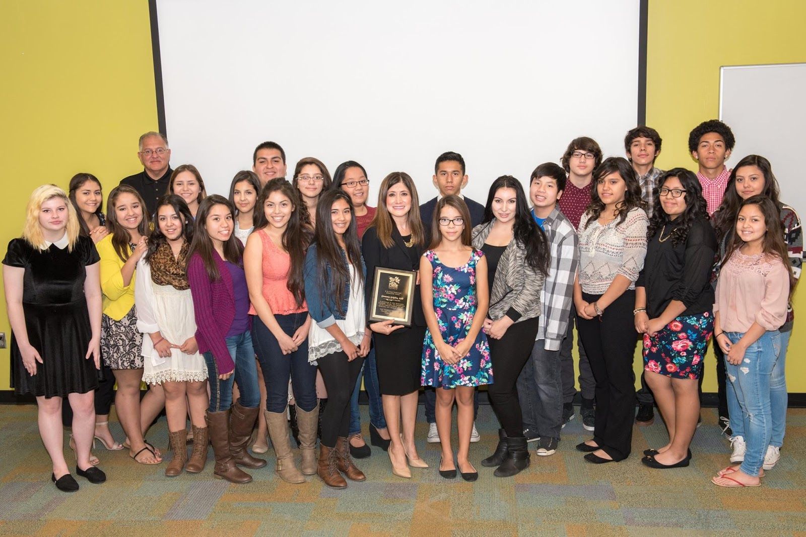

Scholars
The Scholar Program's mission: to provide students with the skills to help them become college ready and to achieve their goal of graduating from college/university. The program is designed to prepare a total of 50 Chandler Unified School District students per year from our partnership high schools to stay on the path toward becoming college ready and competitively eligible for various scholarship opportunities. Students will take part in a nine-weekend college readiness program that will be facilitated by university and junior college educators.
Students meet at Chandler-Gilbert Community College on Saturdays and during school intercessions from 2 to 3 hours per session. In addition,parents will be asked to participate in a parent/student orientation and graduating ceremonies at Chandler/Gilbert Community College. Since its inception in 2010/2011, the scholars program has assisted more 80 students with scholarship and/or financial-aid opportunities.
Click here to view schedule of classes.
General Eligibility Criteria for All Applicants
-
Chandler resident;
-
Financial need;
-
2.5 GPA and above;
-
Referral from a counselor;
-
Must participate in all workshops to be eligible;
Application Procedure and Checklist:
-
Application can be neatly hand written or typed;
-
Provide a copy of the most recent unofficial grade transcript;
-
Submit a TYPED personal statement (maximum of 2 pages double-spaced) and include the following information: a brief family history, community involvement, leadership and/or volunteer activities, academic achievements and course of study;
For additional information, contact Alberto L. Esparza at 480-310-2018.
Si Se Puede Scholars Fall Graduation
Pictures from the graduation for the Si Se Puede Scholars course. This is an amazing course to teach kids valuable skills such as resume writing, and how to apply for college scholarships. It lasts 12 weeks, on Saturdays, and is taught by a graduate from ASU who took this course herself. Many guest speakers are brought in to teach valuable skills, and encourage students to follow their dreams. Anyone who has a student between 8th and 12th grades should consider enrolling them in this course, the next one starts in a few months.
